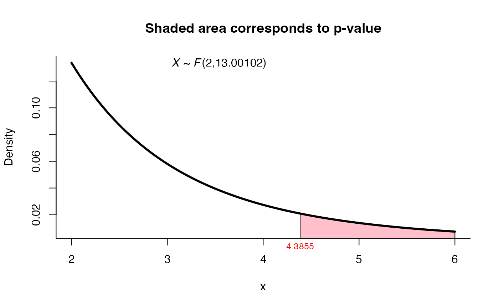
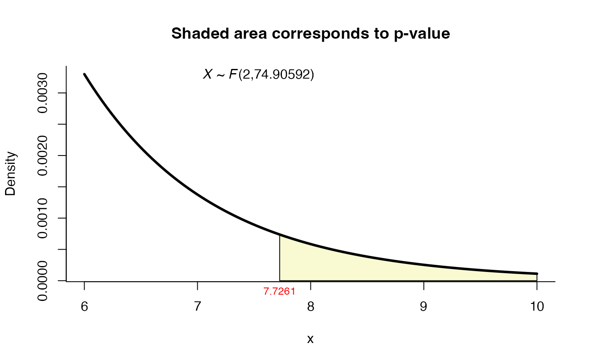

Tests for Equality of Two Normal Mean Vectors
two_mean_vector_test.RdThe function implements the test for \(H_0: \mu_1 = \mu_2\) versus \(H_1: \mu_1\) not = \(\mu_2\) when two random samples are obtained from two p-variate normal populations \(Np(\mu_1, \Sigma_1)\) and \(Np(\mu_2, \Sigma_2)\) respectively. By default, the function performs the Hotelling test for two normal mean vectors assumming equality in the covariance matrices. Other tests for the multivariate Behrens-Fisher problem are also implemented, see the argument method below.
two_mean_vector_test( xbar1, s1, n1, xbar2, s2, n2, delta0 = NULL, method = "T2", alpha = 0.05 )
Arguments
| xbar1 | a vector with the sample mean from population 1. |
|---|---|
| s1 | a matrix with sample variances and covariances from population 1. |
| n1 | sample size 1. |
| xbar2 | a vector with the sample mean from population 2. |
| s2 | a matrix with sample variances and covariances from population 2. |
| n2 | sample size 2. |
| delta0 | a number indicating the true value of the difference in means. |
| method | a character string specifying the method, it must be one of |
| alpha | the significance level only for method |
Value
A list with class "htest" containing the following components:
the value of the statistic.
the degrees of freedom for the test.
the p-value for the test.
the estimated mean vectors.
a character string indicating the type of test performed.
Details
For James test the critic value is reported, if T2 > critic_value we reject H0.
Examples
# Example 5.4.2 from Rencher & Christensen (2012) page 137, # using Hotelling's test n1 <- 32 xbar1 <- c(15.97, 15.91, 27.19, 22.75) s1 <- matrix(c(5.192, 4.545, 6.522, 5.25, 4.545, 13.18, 6.76, 6.266, 6.522, 6.76, 28.67, 14.47, 5.25, 6.266, 14.47, 16.65), ncol = 4) n2 <- 32 xbar2 <- c(12.34, 13.91, 16.66, 21.94) s2 <- matrix(c(9.136, 7.549, 4.864, 4.151, 7.549, 18.6, 10.22, 5.446, 4.864, 10.22, 30.04, 13.49, 4.151, 5.446, 13.49, 28), ncol = 4) res1 <- two_mean_vector_test(xbar1 = xbar1, s1 = s1, n1 = n1, xbar2 = xbar2, s2 = s2, n2 = n2, method = "T2") res1#> #> T2 test for two mean vectors #> #> data: this test uses summarized data #> T2 = 97.678, F = 23.238, df1 = 4, df2 = 59, p-value = 1.444e-11 #> alternative hypothesis: mu1 is not equal to mu2 #> #> sample estimates: #> Sample 1 Sample 2 #> xbar_1 15.97 12.34 #> xbar_2 15.91 13.91 #> xbar_3 27.19 16.66 #> xbar_4 22.75 21.94 #># Example 3.7 from Seber (1984) page 116. # using the James first order test (1954). n1 <- 16 xbar1 <- c(9.82, 15.06) s1 <- matrix(c(120, -16.3, -16.3, 17.8), ncol = 2) n2 <- 11 xbar2 <- c(13.05, 22.57) s2 <- matrix(c(81.8, 32.1, 32.1, 53.8), ncol = 2) res2 <- two_mean_vector_test(xbar1 = xbar1, s1 = s1, n1 = n1, xbar2 = xbar2, s2 = s2, n2 = n2, method = 'james', alpha=0.05) res2#> #> James test for two mean vectors #> #> data: this test uses summarized data #> T2 = 9.4455, critic_value = 7.2308, df = 2 #> alternative hypothesis: mu1 is not equal to mu2 #> #> sample estimates: #> Sample 1 Sample 2 #> xbar_1 9.82 13.05 #> xbar_2 15.06 22.57 #># Example from page 141 from Yao (1965), # using Yao's test n1 <- 16 xbar1 <- c(9.82, 15.06) s1 <- matrix(c(120, -16.3, -16.3, 17.8), ncol = 2) n2 <- 11 xbar2 <- c(13.05, 22.57) s2 <- matrix(c(81.8, 32.1, 32.1, 53.8), ncol = 2) res3 <- two_mean_vector_test(xbar1 = xbar1, s1 = s1, n1 = n1, xbar2 = xbar2, s2 = s2, n2 = n2, method = 'yao') res3#> #> Yao test for two mean vectors #> #> data: this test uses summarized data #> T2 = 9.4455, F = 4.3855, df1 = 2.000, df2 = 13.001, p-value = 0.03503 #> alternative hypothesis: mu1 is not equal to mu2 #> #> sample estimates: #> Sample 1 Sample 2 #> xbar_1 9.82 13.05 #> xbar_2 15.06 22.57 #># Example for Johansen's test using the data from # Example from page 141 from Yao (1965) res4 <- two_mean_vector_test(xbar1 = xbar1, s1 = s1, n1 = n1, xbar2 = xbar2, s2 = s2, n2 = n2, method = 'johansen') res4#> #> Johansen test for two mean vectors #> #> data: this test uses summarized data #> T2 = 9.4455, F = 4.5476, df1 = 2.000, df2 = 16.309, p-value = 0.02587 #> alternative hypothesis: mu1 is not equal to mu2 #> #> sample estimates: #> Sample 1 Sample 2 #> xbar_1 9.82 13.05 #> xbar_2 15.06 22.57 #># Example 4.1 from Nel and Van de Merwe (1986) page 3729 # Test H0: mu1 = mu2 versus H1: mu1 != mu2 n1 <- 45 xbar1 <- c(204.4, 556.6) s1 <- matrix(c(13825.3, 23823.4, 23823.4, 73107.4), ncol=2) n2 <- 55 xbar2 <- c(130.0, 355.0) s2 <- matrix(c(8632.0, 19616.7, 19616.7, 55964.5), ncol=2) res5 <- two_mean_vector_test(xbar1 = xbar1, s1 = s1, n1 = n1, xbar2 = xbar2, s2 = s2, n2 = n2, method = 'nvm') res5#> #> Nel and Van der Merwe test for two mean vectors #> #> data: this test uses summarized data #> T2 = 15.6585, F = 7.7402, df1 = 2.000, df2 = 86.873, p-value = #> 0.0008064 #> alternative hypothesis: mu1 is not equal to mu2 #> #> sample estimates: #> Sample 1 Sample 2 #> xbar_1 204.4 130 #> xbar_2 556.6 355 #># using mnvm method for same data res6 <- two_mean_vector_test(xbar1 = xbar1, s1 = s1, n1 = n1, xbar2 = xbar2, s2 = s2, n2 = n2, method = 'mnvm') res6#> #> Modified Nel and Van der Merwe test for two mean vectors #> #> data: this test uses summarized data #> T2 = 15.6585, F = 7.7261, df1 = 2.000, df2 = 74.906, p-value = 0.00089 #> alternative hypothesis: mu1 is not equal to mu2 #> #> sample estimates: #> Sample 1 Sample 2 #> xbar_1 204.4 130 #> xbar_2 556.6 355 #># using gamage method for same data res7 <- two_mean_vector_test(xbar1 = xbar1, s1 = s1, n1 = n1, xbar2 = xbar2, s2 = s2, n2 = n2, method = 'gamage') res7#> #> Gamage test for two mean vectors #> #> data: this test uses summarized data #> T2 = 15.659, p-value = 5e-04 #> alternative hypothesis: mu1 is not equal to mu2 #> #> sample estimates: #> Sample 1 Sample 2 #> xbar_1 204.4 130 #> xbar_2 556.6 355 #># using Yanagihara and Yuan method for same data res8 <- two_mean_vector_test(xbar1 = xbar1, s1 = s1, n1 = n1, xbar2 = xbar2, s2 = s2, n2 = n2, method = 'yy') res8#> #> Yanagihara and Yuan test for two mean vectors #> #> data: this test uses summarized data #> T2 = 15.6585, F = 7.7272, df1 = 2.000, df2 = 74.309, p-value = #> 0.0008937 #> alternative hypothesis: mu1 is not equal to mu2 #> #> sample estimates: #> Sample 1 Sample 2 #> xbar_1 204.4 130 #> xbar_2 556.6 355 #>